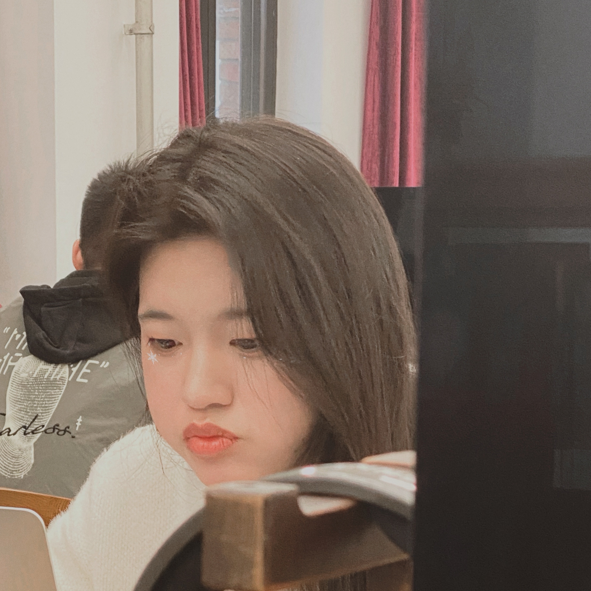

Joan Zhang is a prototype designer with background in creative indudtry management and marketing. Because of this composite education history, she has broad interests in topics including marine protection, human - computer relationship, exhibition, data visualization, experimental animation, speculative design, mix-reality and so on. And to better support those explorations, she has developed the skill in static and motion graphic design, game design, exhibiiton design, APP design, product design, physical computing and so on
Joan Zhang 是一位原型设计师，同时有文化产业管理和营销的教育背景。
由于这种复合的教育经历，她有很多对海洋保护、人机关系、展览、数据可视化、实验动画、思辨设计、混合现实等主题有着广泛的兴趣。 为了更好地支持这些探索，她发展了平面设计，动画设计，展览设计，APP设计，产品设计，实体编程等技能.
中文简历